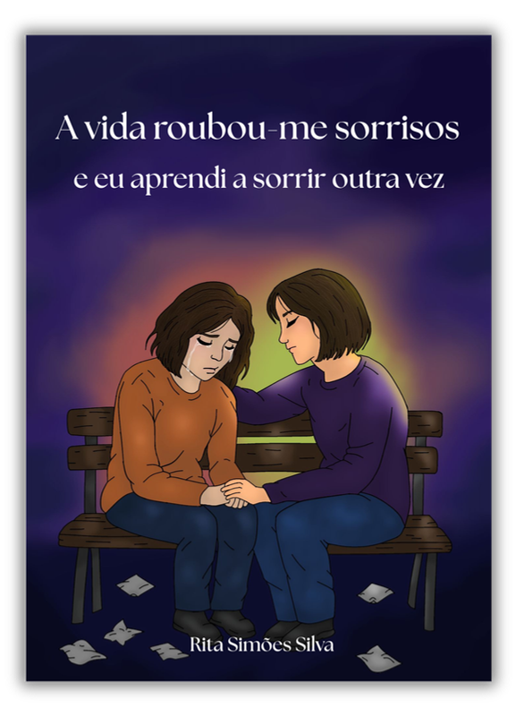
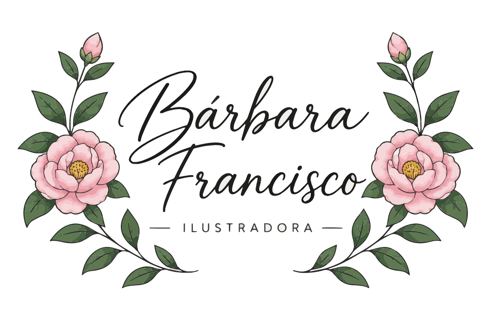
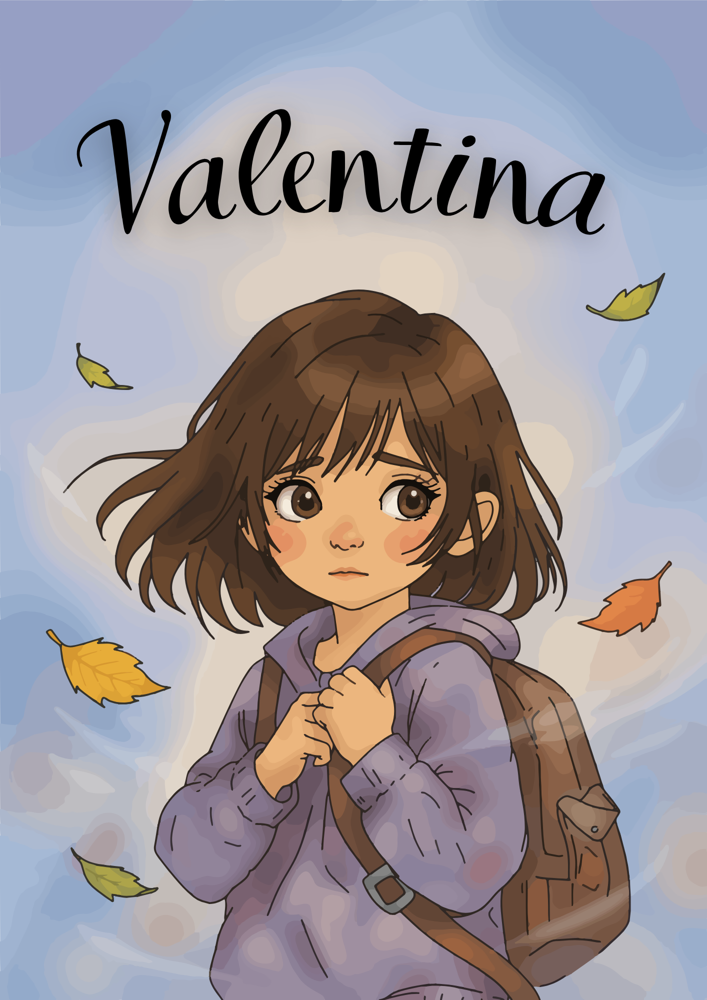
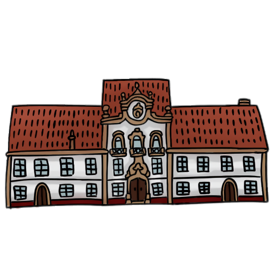
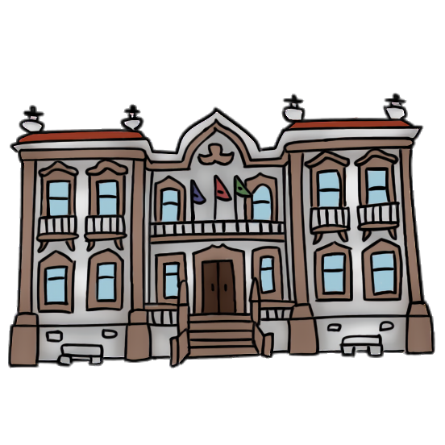
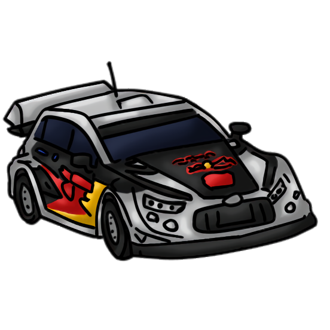

↗Uma imagem sobre amizade, cuidado e a força de voltar a sorrir.

Bárbara FranciscoilustradoraIlustração digital com alma
Crio personagens, histórias e imagens cheias de emoção — sempre com um toque de cor e personalidade.
Feito com imaginação, em PortugalUm pouco do que faço
Projetos que contam histórias e aproximam pessoas através da imagem.

↗Uma imagem sobre amizade, cuidado e a força de voltar a sorrir.

↗Uma personagem curiosa num mundo de cores suaves e folhas de outono.



+ 31 íconesUma coleção de ícones coloridos pensada para dar vida a um jogo.
Do meu caderno para o mundo
Também gosto de desenhar só porque sim. Aqui vivem estudos, personagens e pequenas ideias que nasceram sem briefing — apenas da vontade de criar.
Quero ver mais em breve ↗Olá, olá!
Olá! Sou a Bárbara Francisco, ilustradora digital e apaixonada pelo mundo do desenho e da criatividade. Desde sempre encontrei na ilustração uma forma de expressar ideias, dar asas à imaginação e contar histórias.
Gosto de transformar ideias em imagens, dar vida a personagens e criar ilustrações que transmitam emoções e tenham personalidade. Cada projeto é uma oportunidade de explorar, experimentar e criar algo único, procurando dar identidade e significado a cada detalhe.
Acredito que uma ilustração é muito mais do que um desenho: é uma forma de dar vida àquilo que imaginamos.
Tens uma ideia?
Conta-me um bocadinho sobre o teu projeto. Vou adorar saber mais.
barbarafrancisco.ilustradora@gmail.com ↗